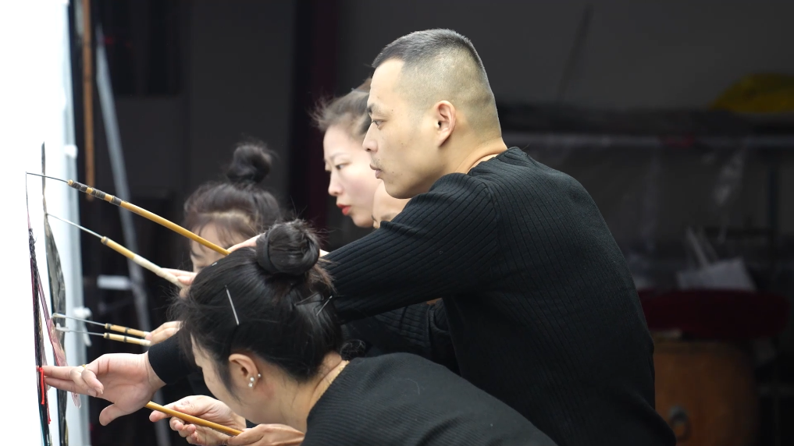
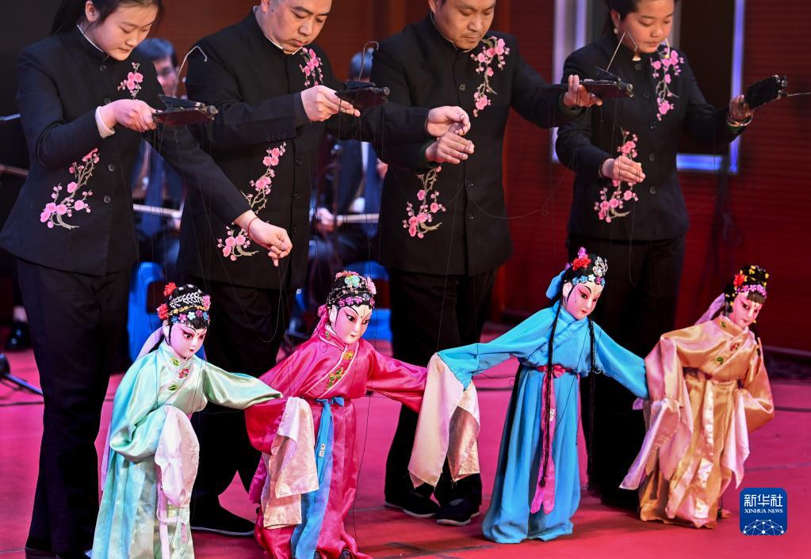
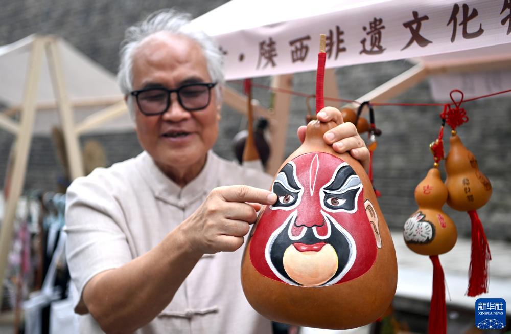
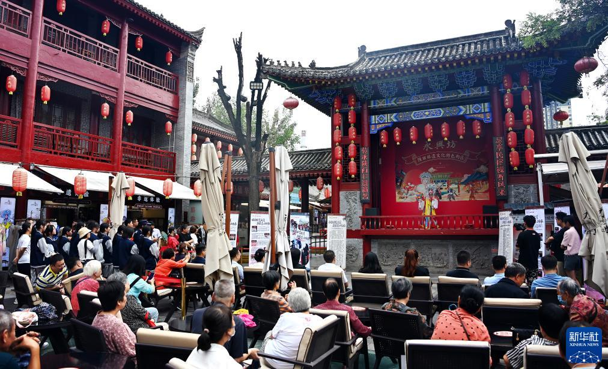
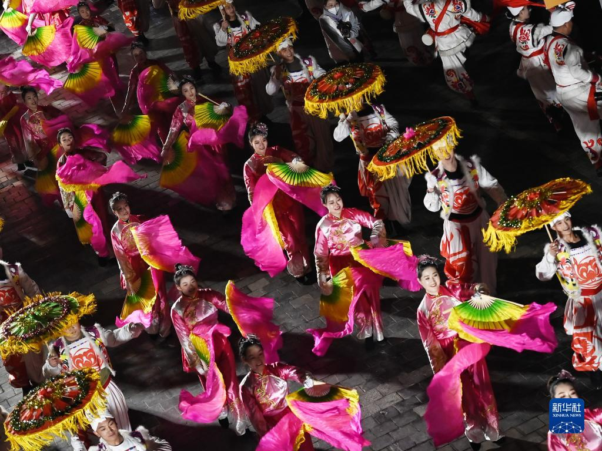
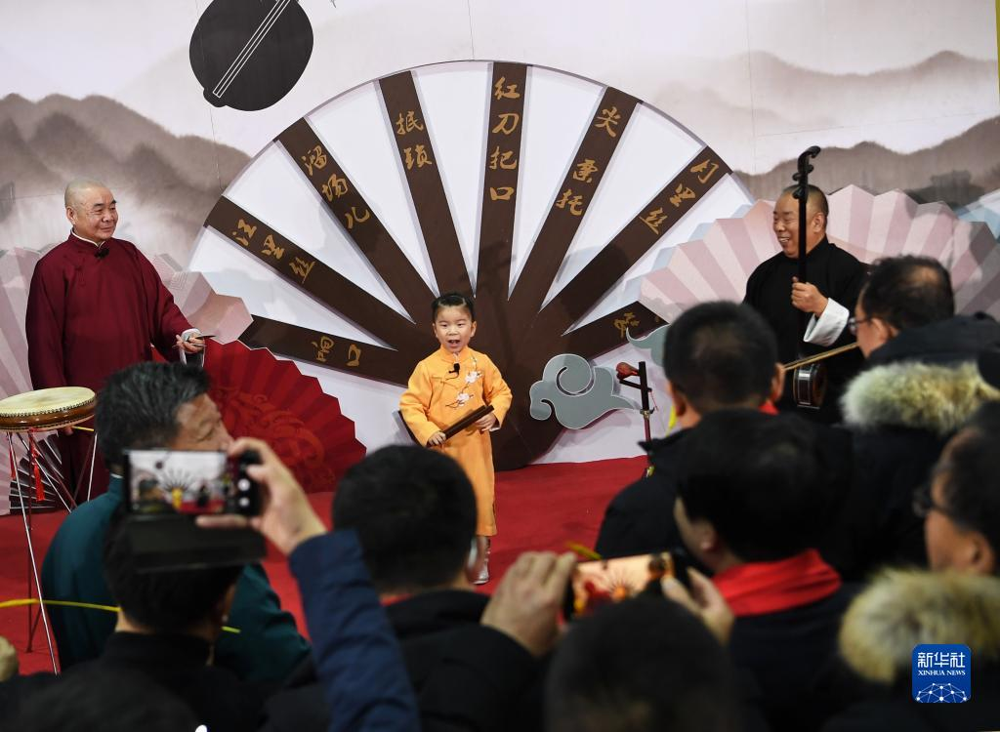
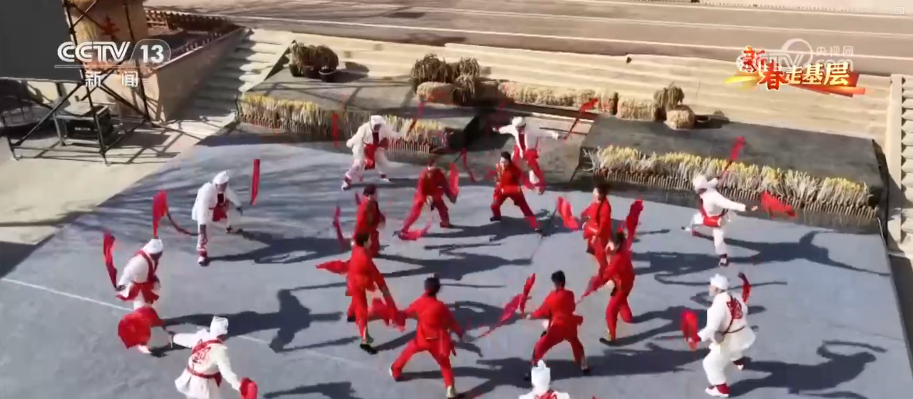
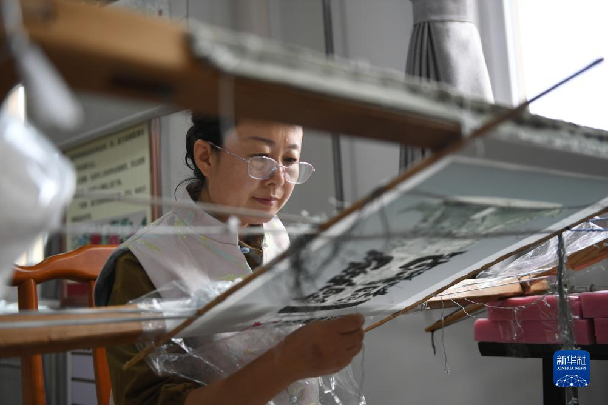
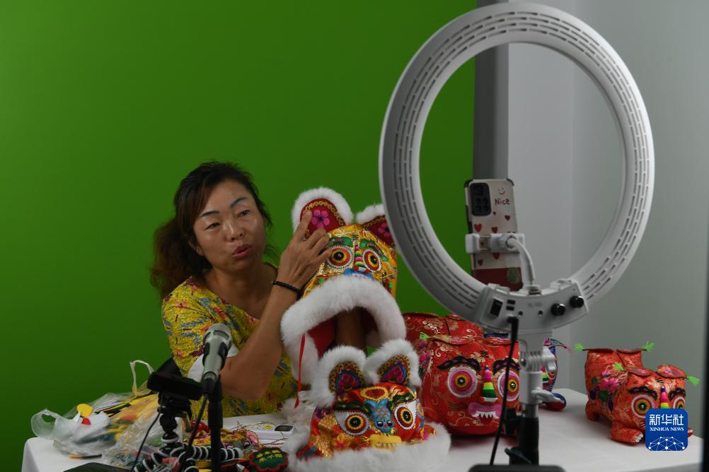
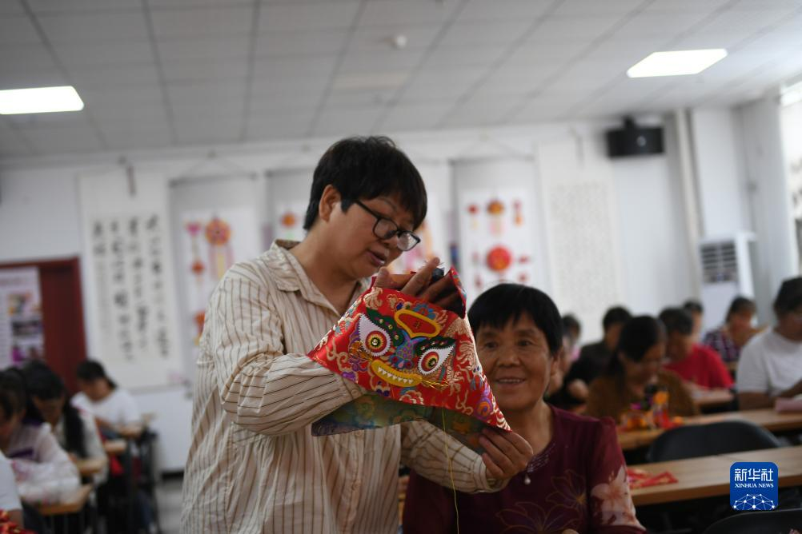

安塞腰鼓
从黄土地走向火车站、广场和节庆舞台。画面里的红鼓和白头巾，是陕北年味最直接的识别点。
- 节奏鲜明
- 队形变化丰富
延安腰鼓、渭南老腔、宝鸡泥塑、关中秦腔，汇成一幅流动的陕西非遗长卷。
精选 18 项陕西非遗
我的非遗清单
从黄土地走向火车站、广场和节庆舞台。画面里的红鼓和白头巾，是陕北年味最直接的识别点。

影偶的镂刻、染彩和操控都很讲究。离开展柜，回到工作台，皮影才有了手艺人的温度。

秦腔不只在剧场里，非遗集市和广场也能听到。它的高腔、板式和行当，是关中气质的一部分。

六营村的泥塑以生肖、虎、龙等形象最容易被记住。泥胎成型后再上色，颜色越大胆越有年节气。

马勺、脸谱和社火连在一起看，才有完整的民俗语境。它不是单纯装饰，而是节庆角色的视觉语言。

剪纸常出现在窗花、节庆和婚俗里。榆林非遗大集的现场图，让这门手艺和日常生活重新连在一起。

黄河老腔带着码头号子的底色，唱起来粗粝、敞亮。走进校园后，年轻人也能听见黄河岸边的老声音。

台上看的是木偶，台下靠的是演员手上的线。细小的抬手、转身和点头，都藏着功夫。

从长安古乐谱到民间乐社，西安鼓乐把笙、笛、管、鼓等声音组织成庄重又华丽的合奏现场。

这是一支和民间水会、仪式空间相连的古老音乐，乐谱、乐器和合奏方式都很有研究价值。

信天游、山曲和小调，把黄土高原的山川、劳动、爱情和生活唱进了日常。

一把三弦、一副甩板，说唱之间把故事、乡音和陕北人的机敏劲儿都带出来。

伞头领队、锣鼓开路，秧歌把社火、年节和村庄广场的热闹连成一条流动的队伍。

蹩鼓的跳跃、击鼓和队形变化很有爆发力，和洛川黄土塬上的节庆场景紧紧相连。

脸谱、锣鼓、队伍和乡村年节一起出现，陇州社火是宝鸡民俗里最有画面感的一支。

虎头帽、绣片、香包和日用布艺里藏着关中乡土审美，也让非遗工坊和乡村产业接上了线。

耀州窑以北方青瓷闻名，取料、制坯、刻花、施釉、烧成，每一步都连着千年窑火。

尧头粗瓷带着渭北民窑的朴拙气质，黑釉、拉坯和柴窑记忆都保留着生活器物的温度。